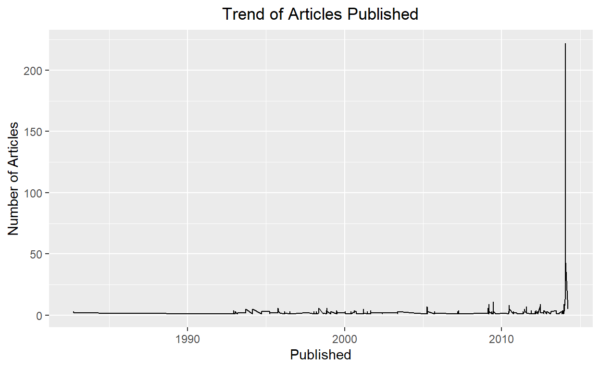
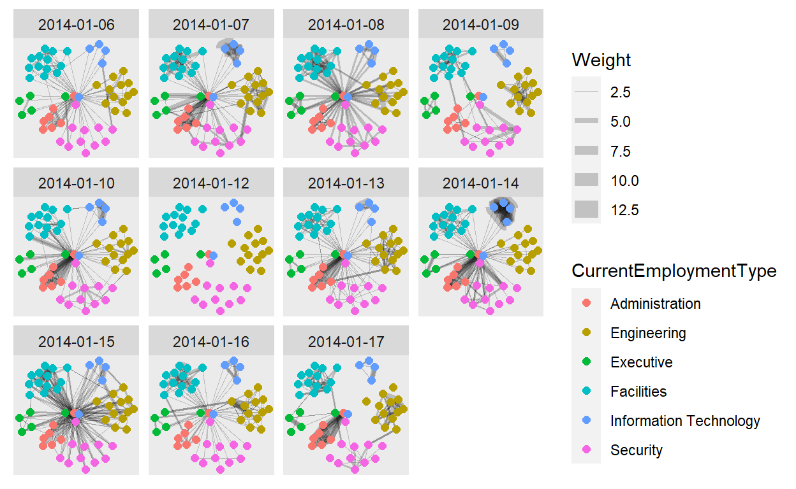
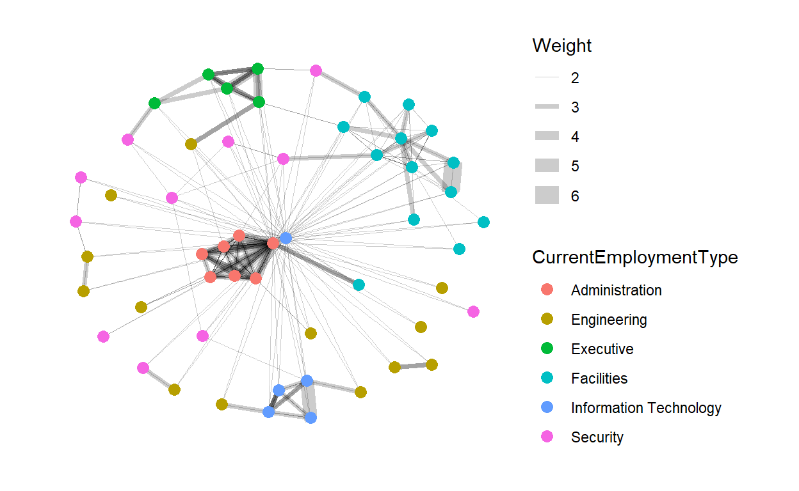

3.1 Visualizing Text Data
3.2.1 Text Net
The textnet is used to represent relationships between words. The first node set is words found in the newspaper articles, and the second node set is the newspapers themselves. That is, one can create a network where newspapers are connected by their use of the same words.
Packages Required:
The only R package presently available to implement text network techniques is the textnets package. The most current version of the textnets package is currently available on Github. To install textnetsor any other package hosted on Github you will need the devtools package. We then install textnets package and all the dependent packages that are required to run the textnets package.
library(devtools)
install_github("cbail/textnets")
packages = c('textnets','dplyr','Matrix','tidytext','stringr','SnowballC','reshape2','igraph','ggraph','networkD3')
for(p in packages){
if(!require(p, character.only = T)){
install.packages(p)
}
library(p, character.only = T)
}
Preparing Texts:
The textnets package requires text that is contained within a dataframe, where each row represents a document. The text of each document must be contained within a single row therefore we have to group all newspaper article based on their name and club all the articles text to one row. Since we have 29 newspapers provided, we should be having 29 rows. For this dataframe, as discussed above only the newspaper name and the content are required. Therefore, we can drop the other columns.
cleaned_text=read.csv("data/cleanArticles.csv")
cleaned_text$Published=as.Date(cleaned_text$Published,format="%Y-%m-%d")
textNet_data=cleaned_text %>%
group_by(newsgroup) %>%
summarise_all(funs(toString(na.omit(.))))
textNet_data=textNet_data[,!(names(textNet_data) %in% c("id","Location","Published","Title"))]
The PrepText function prepares texts for networks using all types of words.This function requires the user to provide four inputs:
a dataframe that meets the requirements described above
the name of a column within that dataframe containing the texts that the user would like to analyze in character format (specified via the textvar argument)
a column within that dataframe describing the groups through which the words of those texts will be linked (specified via the groupvar argument). The groupvar argument is often some type of document identifier or the name of the author of the document (in this case newspapaer name). In network analysis terminology, the textvar and the groupvar are specifying the nodes sets of a two-mode network.
the PrepText function requires the user to specify which projection of the two-mode network should be created using the node_type argument. If one wishes to build a network where the nodes are words, node_type=words should be specified. If one wishes to build a network where nodes are the authors of documents or any other meta data, then node_type=groups should be used.
news_text_data <- PrepText(textNet_data, textvar="Content", groupvar="newsgroup", node_type = "groups",
remove_stop_words=TRUE, remove_numbers=TRUE)
Once the data is converted to the required format, we pass this to a function that reads in an object created using the PrepText function and outputs a weighted adjacency matrix.
news_text_network <- CreateTextnet(news_text_data)
Static Visualization:
To visualize text networks created in the previous step we use the VisTextNet function to create a network diagram where nodes are colored by their cluster. Text networks will be very dense because most documents share at least one word. To make text networks more readable, the visualize function requires the user to specify a prune_cut argument, which specifies which quantile of edges should be kept for the visualization. We shall set this variable to be .30 meaning that only edges that have a weight in the 30th percentile or above will be kept. The label_degree_cut specifies the degree, or number of each connections, that nodes which are labeled should have.
VisTextNet(news_text_network, .30, label_degree_cut=1)

Note that the node color corresponds to text communities (same color indicates a strong relationship between its components).
3D Visualization:
We can also output an interactive visualization of the text network, where the user can mouse over each node in order to reveal its node label. Once again, nodes are colored by their cluster class, and the user must specify a prune_cut argument.
VisTextNetD3(news_text_network, .30)
3.2.2 Clustering
Packages Required:
- ggwordcloud - This package is used to display the wordcloud
packages = c('ggwordcloud')
for(p in packages){
if(!require(p, character.only = T)){
install.packages(p)
}
library(p, character.only = T)
}
Viewing Clusters:
From the previous visualization of text net, the newsgroups have been divided into clusters based on strong relationship between its components. To classifying the newsgroups based on the clusters obtained, we use the TextCommunities function, which automatically uses the edge weights and determines the number of clusters within a given network. The function outputs a dataframe with the cluster or modularity class to which each document has been assigned.
# get text communities and plot their constituting words
text_communities <- TextCommunities(news_text_network)
ggplot(text_communities %>% filter(modularity_class %in% c(1,2,3,4,5,6)),
aes(label=group,
color=modularity_class)) +
geom_text_wordcloud(eccentricity = 1) +
scale_size_area(max_size = 15) +
theme_minimal() +
ggtitle("Segmentation of Newsgroups into Clusters")+
theme(plot.title = element_text(hjust = 0.5))+
facet_wrap(~modularity_class)

Lets store the cluster number information in a cluster column in cleaned_text. This will make it easier to refer to clusters for future visualizations.
cleaned_text$cluster=text_communities$modularity_class[match(cleaned_text$newsgroup,text_communities$
group)]
3.2.3 Text Plot
Packages Required:
tidytext - This package is used to convert text into a format that is visualizable with the use of unnest_tokens function.
udpipe - R package provides language-agnostic tokenization, tagging, lemmatization and dependency parsing of raw text, which is an essential part in natural language processing.
textplot - To plot data as a text plot, we will be needing this package.
packages = c('tidytext','udpipe','textplot')
for(p in packages){
if(!require(p, character.only = T)){
install.packages(p)
}
library(p, character.only = T)
}
Text Plot for Cluster 1:
The word cooccurrence graph graph visualizes collections of word pair and how frequent these word pairs occur. We create a cooccurrence data frame where each row contains the word pair and how many they occur. That cooccurrence data frame will be used as the input for the textplot_cooccurrence function.
After we get the correct input, now we can create the chart. We will take only the 15 most occur word pairs. Do note that we are only visualizing the content of cluster 1 articles. We can obtain other clusters by editing the filter criteria in the subset() function.
usenet_words <- cleaned_text %>%
unnest_tokens(word, Content) %>%
filter(str_detect(word, "[a-z']$"),
!word %in% stop_words$word)
##modify the cluster here
x <- subset(usenet_words, cluster == 1)
x <- cooccurrence(x, group = "id", term = "word")
#x
textplot_cooccurrence(x, top_n = 15, subtitle = "showing Cluster 1")

3.2.4 Comparison Cloud
Packages Required:
tidytext - This package is used to convert text into a format that is visualizable with the use of unnest_tokens function.
tm - This packages has built in functions such as removeStopwords.
wordcloud - The comparison cloud is developed using this package.
packages = c('tidytext','tm','wordcloud')
for(p in packages){
if(!require(p, character.only = T)){
install.packages(p)
}
library(p, character.only = T)
}
Preparing Data:
To build a wordcloud, we first need to have the proper data. Therefore, we first extract the required data from cleaned_text and filter it based on the criteria cluster =5. This values should be changes when we want to visualize other clusters. After we extract the required data, we need to clean it by removing punctuation, digits and stopwords. All of these can be removed by using regular expression as stated in the code chunk below.
title_data=cleaned_text %>%
group_by(newsgroup) %>%
filter(cluster==5)%>%
summarise_all(funs(toString(na.omit(.))))
corpus2=title_data$Title
#punctuation removal
corpus2=gsub(pattern="\\W",replace=" ",corpus2)
#digits removal
corpus2=gsub(pattern="\\d",replace=" ",corpus2)
#stopwords
corpus2=tolower(corpus2)
corpus2=removeWords(corpus2,stopwords("english"))
#remove single letters
corpus2=gsub(pattern="\\b[A-z]\\b{1}",replace=" ",corpus2)
#remove white space
corpus2=stripWhitespace(corpus2)
After we have obtained the clean data, we will have convert corpus to Term Document matrix. Terms are words in the corpus as rows and documents as columns. The values of the matrix will be the frequency which states how many time a word appeared in a document. When we print the resultant object, it specifies how sparse the matrix is and the number of terms and documents present. Since cluster 5 has 6 newsgroups, the number of documents must also be 6.
corpus3=Corpus(VectorSource(corpus2))
tdm=TermDocumentMatrix(corpus3)
tdm
<<TermDocumentMatrix (terms: 375, documents: 6)>>
Non-/sparse entries: 639/1611
Sparsity : 72%
Maximal term length: 15
Weighting : term frequency (tf)Comaprison Cloud for Titles in Cluster 5:
We will now convert the term document matrix to matrix format and rename the document names to the respective newsgroup. As for the comparison.cloud function, there are multiple parameters that can be set as per requirements. For our purpose, we will set the higher frequency words to be in the center and for it we shall set random.order=FALSE. The maximum number of words that can be displayed is set to 300 and the size and color of the title is set to a suitable value as show below.
m=as.matrix(tdm)
colnames(m)=c(title_data$newsgroup)
comparison.cloud(m,max.words = 300,random.order=FALSE,colors=brewer.pal(max(3,ncol(m)),"Dark2") ,title.size=1,
title.colors=NULL, match.colors=FALSE,
title.bg.colors="grey90")

3.2.5 Timeline
Since the data we have cleaned for the articles also contains the published date, we can make use of the column to visualize how events have been unfolding across the years by means of a timeline.
Packages Required:
ggplot2 - Used for plotting graphs
lattice - Used to plot bar chart
knitr - Used to display the dataframes in a proper way
packages = c('dplyr','ggplot2','udpipe','lattice','knitr')
for(p in packages){
if(!require(p, character.only = T)){
install.packages(p)
}
library(p, character.only = T)
}
Visualizing Frequency:
Plotting to understand how the frequency of articles published is.
news=cleaned_text
news %>% group_by(Published) %>% count() %>% ggplot() + geom_line(aes(Published,n, group = 1))+
ggtitle("Trend of Articles Published")+
theme(plot.title = element_text(hjust = 0.5))+
ylab("Number of Articles")

Preparing Data:
Before we move on to perform text analysis lets split year from Published date.
[1] "1982" "1984" "1992" "1993" "1994" "1995" "1996" "1997" "1998"
[10] "1999" "2000" "2001" "2002" "2003" "2004" "2005" "2007" "2009"
[19] "2010" "2011" "2012" "2013" "2014"Udpipe Package provides pretrained language models for respective languages and we can download the required model using udpipe_load_model function. This will automatically convert the text into clean text.
model <- udpipe_download_model(language = "english")
udmodel_english <- udpipe_load_model(model)
Filtering data only for 2009. The udpipe_annotate() function takes the language model and annoates the given text data. This is a function that is within the udpipe package. We then convert this object to a dataframe.
TOP NOUN VERB Pairs as Keyword pairs: In English (or probably in many languages), Simple a noun and a verb can form a phrase. Like, Dog barked with the noun Dog and Barked, we can understand the context of the sentence. Reverse-engineering the same with this titles data, let us bring out top phrases - that are just keywords/topics
news_more <- news %>% filter(year == 2009)
s <- udpipe_annotate(udmodel_english, news_more$Title)
x <- data.frame(s)
## Using a sequence of POS tags (noun phrases / verb phrases)
x$phrase_tag <- as_phrasemachine(x$upos, type = "upos")
stats <- keywords_phrases(x = x$phrase_tag, term = tolower(x$token),
pattern = "(A|N)*N(P+D*(A|N)*N)*",
is_regex = TRUE, detailed = FALSE)
stats <- subset(stats, ngram > 1 & freq > 3)
stats$key <- factor(stats$keyword, levels = rev(stats$keyword))
barchart(key ~ freq, data = head(stats, 20), col = "magenta",
main = "Keywords - simple noun phrases", xlab = "Frequency")
We can re run the above chuck of code by changing the filter criteria year== and replace it with all the years we have. And after running the plot each time , we extract the 1st keyword pair which is the highest frequency and store it into a list called keywords.
#keywords=append(keywords,stats$keyword[1])
When we run the barplot for all available years and store the 1st keyword, we should be getting the below values.
keywords=list("central role", "mediterranean sea","foreign investment","foreign investment",
"shores of kronos","grand opening","gas fields","elodis possible contamination",
"public health","minister of health","president kapelou","taxes on oil",
"public health","hank fluss","public health",NA,"near elodis","leader karel",
"anniversary of protests","public threat","presidential manor","ipo makes","scene blog")
Next, we shall creat another list that consists of events that explain the keywords and then we will unlist bothe the keywords and event list and create a dataframe with years,keywords and event.
event=list("Before Opening","Before Opening","Before Opening","Before Opening","Before Opening",
"Contamination","Contamination","Contamination","Health Impact","Health Impact",
"Health Impact","Health Impact","Health Impact","Health Impact","Health Impact",
"Health Impact","Protests","Protests","Protests","Protests",
"Protests","Protests","Protests")
keywords=unlist(keywords, use.names=FALSE)
event=unlist(event, use.names=FALSE)
timeline=data.frame(years,keywords,event)
Then, we will assign colors for appropriate groupings of all the uniques values in event so our events will be color coded by type of keyword.
# Add a specified order to these event type labeles
Event_type_levels <- c("Before Opening","Contamination" ,"Health Impact","Protests")
# Define the colors for the event types in the specified order
Event_type_colors <- c("#0070C0", "#FFC000", "#00B050", "#C00000")
# Make the Event_type vector a factor using the levels we defined above
timeline$event <- factor(timeline$event, levels= Event_type_levels, ordered=TRUE)
Each keyword on the timeline will need to be positioned carefully. We will vary the height or direction on the timeline keywords to avoid overlapping or overcrowded text descriptions. Then, we shall merge these variables to the timeline dataframe and call the new dataframe as Merkel.
# Set the heights we will use for our keywords.
positions <- c(0.5, -0.5, 1.0, -1.0, 1.25, -1.25, 1.5, -1.5, 1.75, -1.75)
# Set the directions we will use for our keyword, for example above and below.
directions <- c(1, -1)
# Assign the positions & directions to each date from those set above.
line_pos <- data.frame(
"years"=unique(timeline$years),
"position"=rep(positions, length.out=length(unique(timeline$years))),
"direction"=rep(directions, length.out=length(unique(timeline$years))))
# Create columns with the specified positions and directions for each milestone event
Merkel <- merge(x=timeline, y=line_pos, by="years", all = TRUE)
# Let's view the new columns.
kable(head(Merkel))
| years | keywords | event | position | direction |
|---|---|---|---|---|
| 1982 | central role | Before Opening | 0.50 | 1 |
| 1984 | mediterranean sea | Before Opening | -0.50 | -1 |
| 1992 | foreign investment | Before Opening | 1.00 | 1 |
| 1993 | foreign investment | Before Opening | -1.00 | -1 |
| 1994 | shores of kronos | Before Opening | 1.25 | 1 |
| 1995 | grand opening | Contamination | -1.25 | -1 |
We are ready to plot our timeline now!
Step 1: We first start by creating a plan chart consisting of our x and y coordinates and the labels. Then we will set the background to be plain by using the classic theme.
# Create timeline coordinates with an x and y axis
timeline_plot<-ggplot(Merkel,aes(x=years,y= position, col=event, label=Merkel$keywords))
# Add the label keywords
timeline_plot<-timeline_plot+labs(col="keywords")
# Assigning the colors and order to the keywords
timeline_plot<-timeline_plot+scale_color_manual(values=Event_type_colors, labels=Event_type_levels, drop = FALSE)
# Using the classic theme to remove background gray
timeline_plot<-timeline_plot+theme_classic()
# Plot a horizontal line at y=0 for the timeline
timeline_plot<-timeline_plot+geom_hline(yintercept=0,
color = "black", size=0.3)
# Print plot
timeline_plot

Step 2: Now that we have the plain chart ready, we will now add vertical points where the keywords should come in. These lines are placed by making use of the position values we created previously. The legend it set to be at the bottom to enhance the redability.
# Plot the vertical lines for our timeline's milestone events
timeline_plot<-timeline_plot+geom_segment(data=Merkel,
aes(y=Merkel$position,yend=0,xend=Merkel$years), color='black', size=0.2)
# Now let's plot the scatter points at the tips of the vertical lines and date
timeline_plot<-timeline_plot+geom_point(aes(y=Merkel$position), size=3)
# Let's remove the axis since this is a horizontal timeline and postion the legend to the bottom
timeline_plot<-timeline_plot+theme(axis.line.y=element_blank(),
axis.text.y=element_blank(),
axis.title.x=element_blank(),
axis.title.y=element_blank(),
axis.ticks.y=element_blank(),
axis.text.x =element_blank(),
axis.ticks.x =element_blank(),
axis.line.x =element_blank(),
legend.position = "bottom"
)
# Print plot
timeline_plot
Step 3: Next, we will add years to the x axis. We will include two additional years at the start and end of the axis so that all the keywords will be redabe in the chatrt and wont be cut off.
[1] "1981" "1982" "1984" "1992" "1993" "1994" "1995" "1996" "1997"
[10] "1998" "1999" "2000" "2001" "2002" "2003" "2004" "2005" "2007"
[19] "2009" "2010" "2011" "2012" "2013" "2014" "2015"# Let's add the years
timeline_plot<-timeline_plot+geom_text(data=as.data.frame(years),
aes(x=years,y=-0.25,label=years, fontface="bold"),size=2.5, color='black')
Step 4: We need to add the labels of each keyword now. To do this we have to define the text position. A clean timeline should have the labels situated a bit above the scatter points. Since we have the positions of the points already defined, we will place the labels 0.2 pts away from the scatter points.
# Lets offset the labels 0.2 away from scatter points
text_offset <- 0.2
# Let's use the absolute value since we want to add the text_offset and increase space away from the scatter points
absolute_value<-(abs(Merkel$position))
text_position<- absolute_value + text_offset
# Let's keep the direction above or below for the labels to match the scatter points
Merkel$text_position<- text_position * Merkel$direction
# View head of the table
kable(head(Merkel))
| years | keywords | event | position | direction | text_position |
|---|---|---|---|---|---|
| 1982 | central role | Before Opening | 0.50 | 1 | 0.70 |
| 1984 | mediterranean sea | Before Opening | -0.50 | -1 | -0.70 |
| 1992 | foreign investment | Before Opening | 1.00 | 1 | 1.20 |
| 1993 | foreign investment | Before Opening | -1.00 | -1 | -1.20 |
| 1994 | shores of kronos | Before Opening | 1.25 | 1 | 1.45 |
| 1995 | grand opening | Contamination | -1.25 | -1 | -1.45 |
Step 5: For the final step, we can add the labels to the timeline for our keywords and display the timeline.
timeline_plot<-timeline_plot+geom_text(aes(y=Merkel$text_position,label=Merkel$keywords),size=3.5, vjust=0.6)
# Print plot
print(timeline_plot)
The above timeline plot is extremely useful and easily understandable if we have data based on dates. This plot helps us understand how events have been unfolding through the years, months or dates.
3.2.6 Correlation Graph
Packages Required:
- widyr - casts a tidy dataset into a wide matrix, performs an operation such as a correlation on it, then re-tidies the result. pairwise_cor function is from this package.
packages = c('widyr')
for(p in packages){
if(!require(p, character.only = T)){
install.packages(p)
}
library(p, character.only = T)
}
Preparing Data:
First, we need to tidy the text in Content column under the cleaned_text dataframe. For this, we will make use of the unnest_tokens function. Then, we will convert the tidy text into a word-frequenct format.
usenet_words <- cleaned_text %>%
unnest_tokens(word, Content) %>%
filter(str_detect(word, "[a-z']$"),
!word %in% stop_words$word)
words_by_newsgroup <- usenet_words %>%
count(newsgroup, word, sort = TRUE) %>%
ungroup()
Plotting Graph:
To identify which newsgroup tend to be closer to another based on words that commonly appear or tend to be most similar because they use certain terms often, we need to rotate the matrix and for each word as a column and obtain the correlation value using pairwise_cor. By default, pearson method is used to obtain the correlation value.
After obtaining the required data format, we can visualize the relationship between newsgroups in network graph. The thickness of the edge is directly proportional to the correlation value. We use graph_from_data_frame() function to convert the data into a graph model. After we have it in graph data model, we make use of ggraph to plot the graph. We can set the correlation filter value to be any value. In the below code chunk, it was set to greater than 0.9 to identify the most highly correlated newsgroups.
#corelation calculation
newsgroup_cors <- words_by_newsgroup %>%
pairwise_cor(newsgroup,
word,
n,
sort = TRUE)
#plotting graph
set.seed(123)
newsgroup_cors %>%
filter(correlation > 0.9) %>%
graph_from_data_frame() %>%
ggraph(layout = "fr") +
geom_edge_link(aes(alpha = correlation,
width = correlation)) +
geom_node_point(size = 3,
color = "lightblue") +
geom_node_text(aes(label = name),
color = "red",
repel = TRUE) +
theme_void()

3.2.7 Wordcloud
Packages Required:
RColorBrewer - Used to modify the color pallet of the word cloud
wordcloud - Used to develop the word cloud
packages = c('RColorBrewer','wordcloud')
for(p in packages){
if(!require(p, character.only = T)){
install.packages(p)
}
library(p, character.only = T)
}
Plotting the WordClouds:
After obtaining the correlation between various newsgroups, we can plot wordclouds to identify the type of content the newsgroups have and see the similary in context used.
Below is the wordcloud of The World:
set.seed(123)
sub_words1=words_by_newsgroup %>% filter(newsgroup %in% c('The World'))
sub_words2=words_by_newsgroup %>% filter(newsgroup %in% c('Who What News'))
wordcloud(words = sub_words1$word
, freq = sub_words1$n, min.freq = 1,
max.words=200, random.order=FALSE, rot.per=0.35,
colors=brewer.pal(8, "Dark2"))
Below is the wordcloud of Who What News:
wordcloud(words = sub_words2$word
, freq = sub_words2$n, min.freq = 1,
max.words=200, random.order=FALSE, rot.per=0.35,
colors=brewer.pal(8, "Dark2"))

3.2.8 Bigram
Packages Required:
tidytext - This package is used to convert text into a format that is visualizable with the use of unnest_tokens function.
tidyr - the separate function used to separate two words is present in this package.
packages = c('tidytext','tidyr')
for(p in packages){
if(!require(p, character.only = T)){
install.packages(p)
}
library(p, character.only = T)
}
Preparing Data:
In the Content column, instead of just trying to see the similarity With other newsgroups, we can also see how frequent do phrases appear together. To look for phrases that mostly appear together, we use the unnest_tokens() function by mentioning the token and number of terms we want to link. As discussed earlier, unnest_tokens() function is from the tidytext package and it converts clean dataframes into mentioned formats; in this case, the bigram format. We set the token parameter as ngrams and the number of terms as 2. By running the below code chunk, there will be a column called bigram created containing pair of words that have a higher frequency of appearing together.
bigrams <- cleaned_text %>%
unnest_tokens(bigram,
Content,
token = "ngrams",
n = 2)
Next, we will split the two words (since we set n=2, we will have phrases consisting of two words) and remove stop words.
Then, we will calculate the count of each word pair across all rows and store it in the decresing order under the variable bigram_countsbigram_counts.
bigram_counts <- bigrams_filtered %>%
count(word1, word2, sort = TRUE)
*Plotting Graph:
Finally, we will create a graph object by using the graph_from_data_frame() function adn we can also specify the filtering criteria we want. In the code chunk below, the filter is set to plot graph of all phrases that have count more than 40.
When plotting the graph, we can include the arrow head to show which word starts and which ends. this makes it more meaningful to understand.
bigram_graph <- bigram_counts %>%
filter(n > 30) %>%
graph_from_data_frame()
set.seed(123)
a <- grid::arrow(type = "closed",
length = unit(.15,
"inches"))
ggraph(bigram_graph,
layout = "fr") +
geom_edge_link(aes(edge_alpha = n),
show.legend = FALSE,
arrow = a,
end_cap = circle(.07,
'inches')) +
geom_node_point(color = "lightblue",
size = 5) +
geom_node_text(aes(label = name),
vjust = 1,
hjust = 1) +
theme_void()

3.2 Visualizing Network Data
Packages Required:
The purpose for requiring the packages are:
lubridate - The wday function which converts date to a weekday belongs to this package.
tidygraph - tbl_graph function which converts data to an object to display network belons to this package.
ggraph - Plotting of the network object happens via this package.
packages = c('lubridate','tidygraph','ggraph')
for(p in packages){
if(!require(p, character.only = T)){
install.packages(p)
}
library(p, character.only = T)
}
Preparing Data:
For easier understanding, lets save our clean email data as edges and employee data as nodes.
Next, lets create an aggregated edges that consists of a new variable called Weight which holds the count on how many times source sends email to target. for the first aggregate, we shall group by SentDate. We shall create 3 categories of network graph. One represents all the emails across all employess and the other two will look into only those that are work and non-work related.
#all emails
edges_aggregated=edges %>%
group_by(Source,Target,SentDate) %>%
summarise(Weight=n()) %>%
filter(Weight >1) %>%
ungroup()
#work related emails only
edges_official=edges %>%
filter(MainSubject == "Work related") %>%
group_by(Source,Target,SentDate) %>%
summarise(Weight=n()) %>%
filter(Weight >1) %>%
ungroup()
#non-work related emails only
edges_unofficial=edges %>%
filter(MainSubject == "Non-work related") %>%
group_by(Source,Target,SentDate) %>%
summarise(Weight=n()) %>%
filter(Weight >1) %>%
ungroup()
Now that we have the aggregated edges, we have to create a wrapper to build the graph model. This can be done using the tbl_graph function present in the tidygraph package.
network_graph = tbl_graph(nodes=nodes, edges=edges_aggregated,
directed=TRUE )
network_graphOfficial = tbl_graph(nodes=nodes, edges=edges_official,
directed=TRUE )
network_graphUnofficial = tbl_graph(nodes=nodes, edges=edges_unofficial,
directed=TRUE )
3.2.1 Overall Distribution of Emails
The network graphs we created consists of 3 parts 1) layout: the layout you want to use 2) The aesthetics for edges 3) The aesthetics for nodes
For all these, we make use of the ggraph package. We use theme_graph to modify the background color. The node and edge color can be changed by specifying the color in the aes() method under the variable color. We can also add other parameters such as the layout type and also color the nodes based on the employment category so as to understand the connectivity between various employment categories. The thickness of the edges will be mapped with the Weight variable by using the scale_edge_width function. So the thicker the edge, the more emails passed between the two nodes.
Distribution of all email across all employees for the duration of 2 weeks before the incident.
set.seed(123)
g <- ggraph(network_graph,
layout = "nicely") +
geom_edge_link(aes(width=Weight),
alpha=0.2) +
scale_edge_width(range = c(0.1, 5)) +
geom_node_point(aes(colour = CurrentEmploymentType),
size = 2)
g + facet_edges(~SentDate)

3.2.2 Official and Unofficial Relationships
Work Related Emails:
Non-Work Related Emails:
set.seed(123)
g <- ggraph(network_graphUnofficial,
layout = "nicely") +
geom_edge_link(aes(width=Weight),
alpha=0.2) +
scale_edge_width(range = c(0.1, 5)) +
geom_node_point(aes(colour = CurrentEmploymentType),
size = 3)
g + theme_graph()

3.2.3 Unofficial Relationships Related to Politics, Kronosand Media
Identifying the employees who had discussion about any of the the key terms such as politics, Kronosand media under the non-wok related emails. We create another dataframe called unofficial_discussions which is the output of filtering the original edges dataframe based on the content in the Subject column consists of any of the mentioned key terms. The output datatable consists of all such informal emails that could provides some insight.
keyterms=c('politics','kronos','media')
unofficial_discussions=edges
for (i in (1:nrow(unofficial_discussions))){
unofficial_discussions$filter.condition[i] <-ifelse(ifelse(any(str_detect(unofficial_discussions$Subject[i],
keyterms))==TRUE,TRUE,FALSE),TRUE,FALSE)
}
unofficial_discussions=unofficial_discussions %>%
filter(filter.condition == TRUE)
Next, lets create an aggregated edges called unofficial that consists of a new variable called Weight which holds the count on how many times source sends email to target just like how we did for the above graphs.
unofficial=unofficial_discussions %>%
group_by(Source,Target,SentDate) %>%
summarise(Weight=n()) %>%
filter(Weight >1) %>%
ungroup()
Some additional steps that we need to perform are that if we want to only display the nodes that have edges in the graph, then we need to filter the nodes dataframe to contain only the ids that are present in the unofficial edge object. Therefore, we obtain the unique ids that are present in the unofficial edge object and creat a new sub_node consisting of only those ids.
An important point to node is that the id values on the node must be continuous. Therfore, we need to relabel the id column by creating a new column called new_id and then re edit the source and target in the unofficial dataframe.
ids=unofficial$Source
ids=append(ids,unofficial$Target)
ids=unique(ids)
#Create sub node consisting of ids present in unofficial
sub_nodes=nodes %>% filter(id %in% ids)
#create new column called new_id
sub_nodes$new_id=1:nrow(sub_nodes)
#re edit the Source and Target ids
unofficial$Source=sub_nodes$new_id[match(unofficial$Source,sub_nodes$id)]
unofficial$Target=sub_nodes$new_id[match(unofficial$Target,sub_nodes$id)]
#remove the old id column and rename the new_id column
sub_nodes=sub_nodes[,!(names(sub_nodes) %in% c("id"))]
names(sub_nodes)[names(sub_nodes) == 'new_id'] <- 'id'
Now that we have the everything ready, we have to create a wrapper to build the graph model.
graphUnofficial = tbl_graph(nodes=sub_nodes, edges=unofficial)
Now, we can build multiple graphs with various coloring criteria to identify who has been discussing about such sensitive information.
- First, we will identify the employee names who were discussing such informal topics.
- Next, we will identify the employment type of the above mentioned people.
- Lastly, we can identify the citizenship of those employees.
3.2.4 Role of Citizenship in Employment Type
Using facet nodes to separate the network based on the the citizenship of the employees.
set.seed(123)
g <- ggraph(network_graph,
layout = "nicely") +
geom_edge_link(aes(width=Weight),
alpha=0.2) +
scale_edge_width(range = c(0.1, 5)) +
geom_node_point(aes(colour = CurrentEmploymentType),
size = 2)
g + facet_nodes(~CitizenshipCountry)+
th_foreground(foreground = "grey80",
border = TRUE) +
theme(legend.position = 'bottom')
3.2.5 Most Important Employees
Centrality is used to find the relative role played by different nodes. betweenness provides information on how important the node is. The bigger the node size, higher the betweenness centrality.